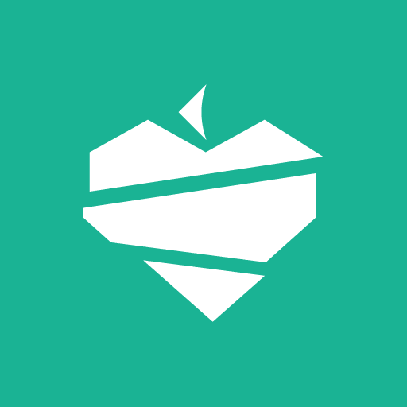
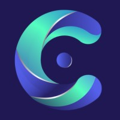
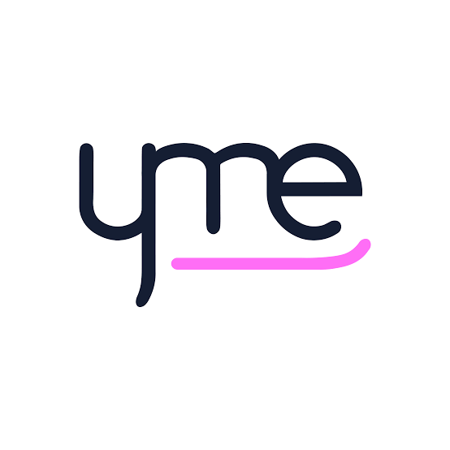

Hi, I'm
Software Engineer with a Master's in AI from Universidade do Porto.
Hover to reveal details
Feedzai · Full-time
Porto, Portugal · Hybrid
2 highlights — hover to expand

Nutrium · Full-time
Braga, Portugal · Hybrid
3 highlights — hover to expand

ITSCREDIT · Part-time
Porto, Portugal · Hybrid
1 highlight — hover to expand

Young Minho Enterprise · Full-time
Braga, Portugal · Hybrid
3 roles — hover to expand
Corporate Social Responsibility (Taskgroup) Nov 2023 – Feb 2025
Digital Development – Junior Consultant Mar 2024 – Jan 2025
Reimplementation of the MF-Q and MF-AC algorithms from Mean Field Multi-Agent Reinforcement Learning (Yang et al., 2018), designed for scalable MARL in large populations. Also integrates the VAST framework (Phan et al., 2021) for training in the Gaussian Squeeze environment, and a competitive multi-agend "battle" environment
See project on GitHubA Solr-based information retrieval system for medical drug documents, comparing schemeless indexing, boosted schema-based indexing, and hybrid semantic search (MiniLM). The project evaluates performance across multiple queries using precision, recall, accuracy, and robustness metrics.
See project on GitHubUsing reinforcement learning in a locomotion system for a simulated quadruped robot, comparing PPO, A2C, and TD3 algorithms under a progressive curriculum learning framework. The project evaluates the agent's transition from basic balancing to complex, goal directed walking using convergence speed, stability, and gait quality metrics.
See project on GitHubAn NLP-based classification system for Emakhuwa news articles, comparing traditional feature extraction (BOW, TF-IDF), character n-grams, and dense vector representations (Word2Vec). The project evaluates model performance between full-text and headline-only approaches using precision, recall, F1-score, and accuracy metrics.
See project on GitHubDevelopment of a server-client app that allows scalable peer-to-peer downloads of any type of file at a fast rate, securely and for simultaneous clients. Uses partition to ensure users can dowload parts from different sources and get the desired file, even if no one in the network actually has all the packets, and deals with rare packets balance in the network.
See project on GitHubDevelopment of a user friendly interface, that follows Nielsen's heuristics to ensure easy comprehension by the targeted public (mechanics)
See project on GitHubDelivery app that employs various supervised and unsupervised techniques to compute the shortest paths, considers transportation modes and their CO2 emissions, and optimizes delivery times while promoting environmental efficiency.
See project on GitHubAcademic project about operative systems that includes a server and tracer programs that act as a "system()" function in C, allowing for the consultation of running and finished processes. The system stores information about the processes, providing details such as the process ID, start and end time, and other relevant data.
See project on GitHubA server-client application enabling multiple clients to securely send process execution requests to the server using FIFOs, and receive the corresponding outputs.
See project on GitHubComprehensive auction platform designed to facilitate online car auctions. It allows users to list cars for auction, place bids on vehicles, and manage auctions and bids with ease. Built with ASP.NET Core and Entity Framework, the platform offers a robust and scalable solution for online car auction businesses.
See project on GitHubModelation and implementation of a gym database in SQL, with subsequent data filling and coherence assurance using Python.
See project on GitHubThis academic project focuses on developing an app that operates similar to Vinted, allowing users to buy and sell items in a marketplace.
See project on GitHubThe website you are currently visiting.I am developing it with the purpose of improving my front-end skills.
See project on GitHubThe project involves parsing data from CSV files that contain uber like information about rides, users, and drivers. This information is then cross-referenced to answer specific queries and the resulting data is outputted to files.
See project on GitHubProject made at Universidade do Minho that revolves around a stack machine with multiple operators that accepts multiple data types.
See project on GitHubI created a "Block Dude" game using Haskell as my first project at Universidade do Minho. It involves moving blocks and climbing to reach higher places and ultimately the objective (the door), and required problem-solving skills and knowledge of functional programming.
See project on GitHubtiagonunoteixeira@gmail.com